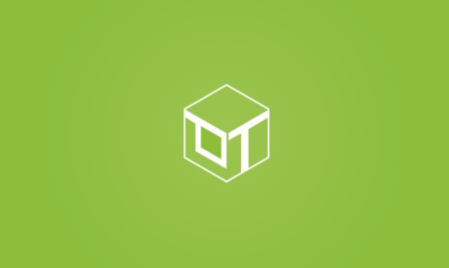

<ion-header>
    <ion-navbar color="secondary" class="box-shw">
        <button ion-button menuToggle>
            <ion-icon name="menu"></ion-icon>
        </button>
        <ion-title>Component Buttons</ion-title>
        <ion-buttons end>
            <button ion-button icon-only>
                <ion-icon name='search'></ion-icon>
            </button>
        </ion-buttons>
    </ion-navbar>
</ion-header>
    
<ion-content class="background">
    <div class="row">
        <h2 class="button-heading">Ionic Component Buttons:</h2>
    </div>

    <ion-card class="box-shw">
        <ion-card-content>
            
        </ion-card-content>
        <ion-item>
            <button ion-button clear item-start>Like</button>
            <button ion-button clear item-end>Comment</button>
        </ion-item>
    </ion-card>

    <ion-list class="box-shw">
        <ion-item>
            Inner Button
            <button ion-button item-end outline>Outline</button>
        </ion-item>

        <ion-item>
            Left Icon Button
            <button ion-button item-end outline icon-start>
                <ion-icon name='star'></ion-icon>
                Left Icon
            </button>
        </ion-item>

        <ion-item>
            Right Icon Button
            <button ion-button item-end outline icon-end>
                Right Icon
                <ion-icon name='star'></ion-icon>
            </button>
        </ion-item>
    </ion-list>
</ion-content>